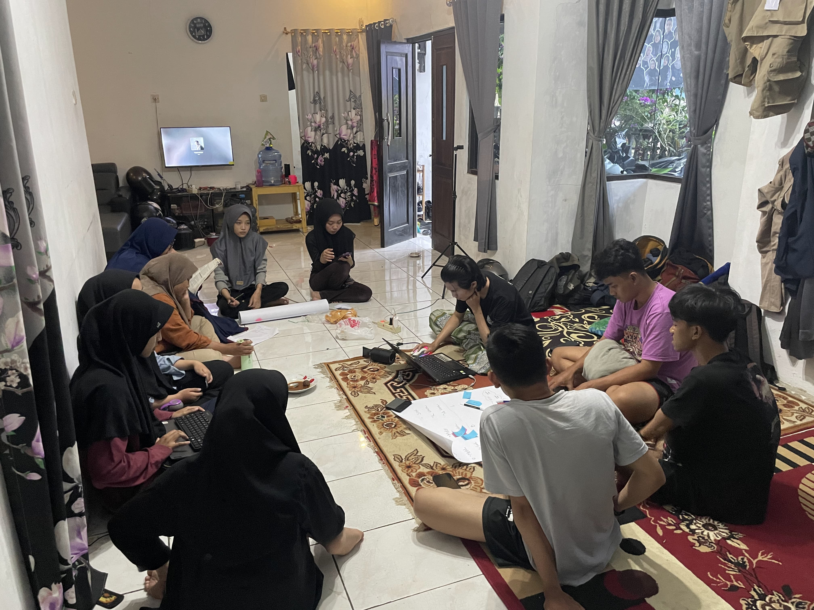

HARI KE-9
PENGKONSEPAN PROGRAM KERJA KKN SISDAMAS 2024

Kelompok 265 dari Universitas Islam Negeri Sunan Gunung Djati Bandung mengadakan kegiatan Kuliah Kerja Nyata (KKN)
di Kampung Cikawati RW 04, Desa Pakuhaji, Kecamatan Ngamprah, Kabupaten Bandung Barat pada tahun 2024. Dalam rangka
meningkatkan kesejahteraan masyarakat melalui program KKN SISDAMAS (Sistem Pemberdayaan Masyarakat), kelompok kami
berfokus pada beberapa program kerja utama. Salah satu program yang menjadi prioritas adalah pengelolaan sampah,
mengingat masalah sampah merupakan isu krusial yang dihadapi oleh masyarakat di daerah ini.
Dalam menangani masalah sampah, kami merencanakan sebuah program inovatif yang melibatkan penggunaan magot
(larva Black Soldier Fly) untuk mengelola sampah organik. Program magot ini bertujuan untuk mengurangi volume
sampah organik yang dihasilkan oleh rumah tangga dan meningkatkan kesadaran masyarakat tentang pentingnya
pengelolaan sampah yang ramah lingkungan. Selain itu, hasil dari budidaya magot ini dapat dimanfaatkan
sebagai pakan ternak yang bernilai ekonomis, sehingga memberikan manfaat ganda bagi masyarakat.
Selain pengelolaan sampah, kelompok kami juga berinisiatif untuk mendirikan sudut baca di Yayasan Amanah Miftahul Ummah.
Sudut baca ini diharapkan dapat menjadi pusat literasi bagi anak-anak dan masyarakat sekitar, dengan menyediakan berbagai
buku bacaan yang menarik dan edukatif. Kami percaya bahwa akses terhadap bacaan yang berkualitas dapat meningkatkan minat baca
dan pengetahuan masyarakat, serta membuka wawasan mereka terhadap dunia luar.
Tidak hanya itu, kami juga mengadakan penyuluhan mengenai program studi di Universitas Islam Negeri Sunan Gunung Djati Bandung.
Penyuluhan ini bertujuan untuk memberikan informasi dan motivasi kepada para remaja di Kampung Cikawati agar melanjutkan pendidikan
ke jenjang yang lebih tinggi. Dengan demikian, diharapkan mereka dapat memiliki pandangan yang lebih luas tentang masa depan dan peluang karir yang dapat mereka capai melalui pendidikan.
Secara keseluruhan, program kerja KKN SISDAMAS 2024 ini dirancang untuk memberikan dampak positif yang berkelanjutan bagi masyarakat Kampung Cikawati.
Kami berharap melalui program-program ini, masyarakat dapat lebih mandiri dan berdaya dalam menghadapi berbagai tantangan, serta memiliki kualitas hidup yang lebih baik.
Kolaborasi dan partisipasi aktif dari seluruh masyarakat sangat kami harapkan agar tujuan dari program ini dapat tercapai dengan optimal.